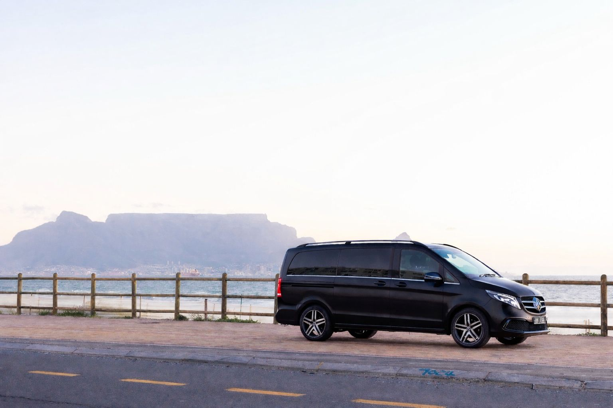

Le Grant Tours & Transfers provides luxury airport transfers in Cape Town, ensuring a seamless, private and professional travel experience.
We specialise in Mercedes-Benz chauffeur services for business travellers, VIP guests and international visitors arriving at Cape Town International Airport.
We monitor all flights for delays and early arrivals.
Your chauffeur waits inside arrivals with a name sign.
Mercedes V-Class, S-Class and executive vehicles.
Available day and night, including holidays.

Every airport transfer is handled with precision, discretion and comfort. Our chauffeurs are professionally trained and experienced in VIP transport.
Cape Town, Camps Bay, Clifton, Sea Point, Green Point, Constantia, Stellenbosch, Cape Winelands
Yes, we monitor all flights in real-time.
Yes, we operate 24 hours a day, 7 days a week.
Mercedes-Benz V-Class, S-Class and executive fleet vehicles.
Luxury, reliability and professionalism from Cape Town’s premium chauffeur service.